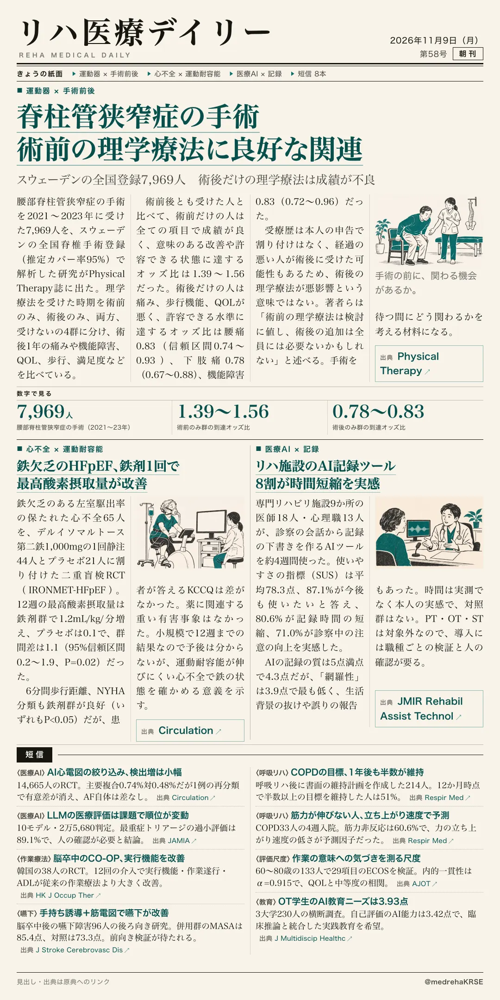
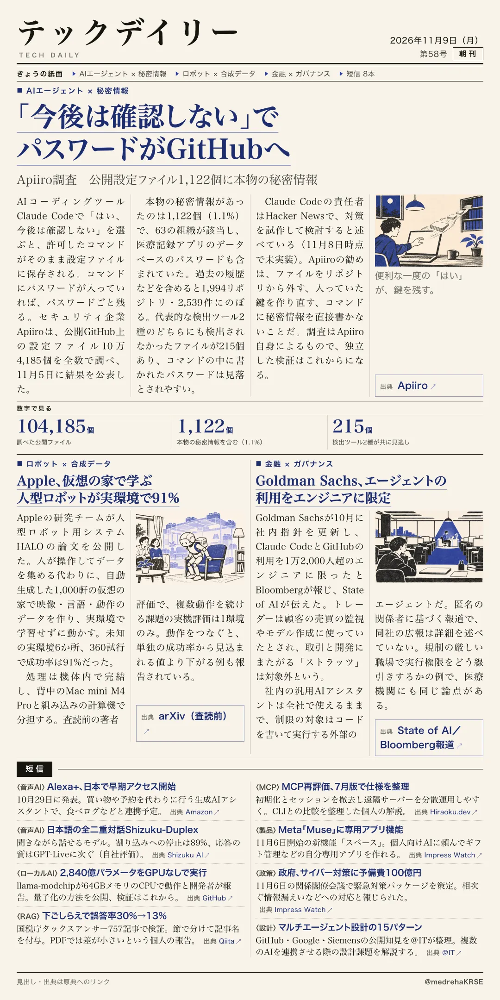

リハ医療デイリー
脊柱管狭窄症の手術 術前の理学療法に良好な関連
スウェーデンの全国登録7,969人 術後だけの理学療法は成績が不良
理学療法を受けた時期で4群に分けた観察研究。

テックデイリー
「今後は確認しない」でパスワードがGitHubへ
Apiiro調査 公開設定ファイル1,122個に本物の秘密情報
公開GitHubのClaude Code設定ファイルを全数で調べた自社調査。

スウェーデンの全国登録7,969人 術後だけの理学療法は成績が不良
理学療法を受けた時期で4群に分けた観察研究。

Apiiro調査 公開設定ファイル1,122個に本物の秘密情報
公開GitHubのClaude Code設定ファイルを全数で調べた自社調査。
